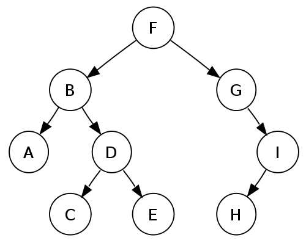

Le problème
Comment retrouver un objet?
La classification
- Système de classement
- Ranger des objets dans différentes catégories
Automatisation ????
Arbres de décision
- PRINCIPE ?
- Diagramme
- 1 noeud = 1 décision
- 1 feuille = 1 label
- 
- AVANTAGES
- Intuitif
- Simple
- INCOVÉNIENTS
- Division du training set
- Overfitting
- Organisation hiérarchique
Machines à vecteur de support (SVM)